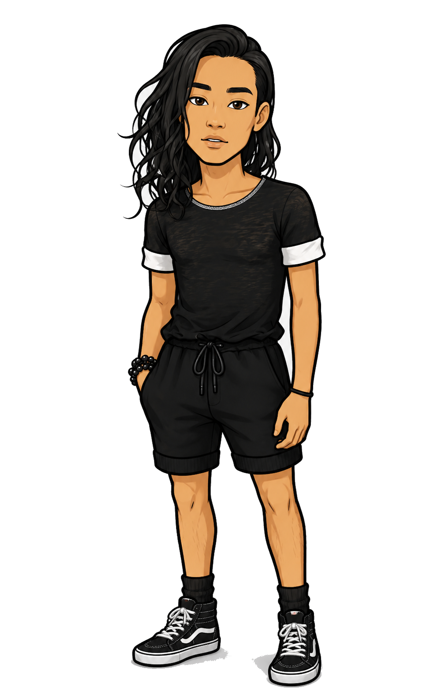

The elementary years decide a lot: whether a kid learns to hide or to be honest, to compete or to connect. I spend my days designing the classroom moments, theatre games, and everyday nudges that teach kids both — because a child who feels safe being real is a child who can finally see someone else.

I grew up in Corona, Queens — a neighborhood that never once let me get bored, or get away with a boring answer. Somewhere between community theaters, hip-hop cabarets, and a soloist spot at Carnegie Hall, I learned that a stage is really just an honest classroom, and a classroom is really just a very small stage. I hold a Master of Science in Educational Theatre from The City College of New York, and a lifelong hunch that empathy, curiosity, and good timing can fix almost anything. These days I split my energy between teaching humans and building with AI — same job, really: helping something find its voice.
Raised in Queens — one of the most diverse places on Earth. It shaped how I listen before I speak.
Trained as an actor and singer. I still approach every problem like it's a scene worth building carefully.
M.S. in Educational Theatre, CCNY — where I learned to turn a room of strangers into an ensemble.
I didn't start out chasing three careers — I started out chasing the same question in three different rooms: what does it take to help someone become who they're capable of being?
Every classroom, every stage, and every AI system I've helped build has come back to that same instinct — notice what's underneath the surface, meet people where they are, and build the conditions for something true to come through. Teaching taught me patience. Theater taught me presence. AI is teaching me how far that same empathy can scale. It's all one job — I just keep changing the room.
I care more about someone's next rehearsal than their opening night. Growth is the real show.
I chase the question I don't have an answer to yet — whether it's hiding in a script, a syllabus, or a prompt.
Technique, pedagogy, and technology are all just tools. The point is always the person in front of me.
A few things I bring to any room — a classroom, a rehearsal, a product meeting.
Years on stage means years of reading a room before it's finished exhaling. I hear what's underneath the words — the note people are actually trying to hit.
Give me a scene with no set, a classroom with no budget, or a workflow with no roadmap. I'll find the fix that was hiding in the constraint the whole time.
I've played disillusioned volunteers, tenors, and pre-K enrichment leads. Every single role taught me the same thing: people are the whole plot.
Certified NYC theatre educator with hands-on experience across grades K–12 — from newcomer high schoolers to pre-K enrichment programs.
Taught ensemble-building theatre games to newly arrived, mostly Spanish-speaking students from Central and South America. Led warm-ups indoors and out, ran a weekly after-school drama club, and kept the room steady during passing periods and lunch.
Built lesson plans alongside a cooperating teacher, rehearsed a student production of The Wiz, and sat in on social-emotional learning meetings to understand the whole student, not just the scene.
Walked into hundreds of unfamiliar rooms and built rapport fast — reading learning styles, co-creating classroom norms with students, and advising teens on specialized high schools and college paths along the way.
One-on-one tutoring for rising first graders, plus recreational programming designed to reconnect kids socially after a hard year.
Led a pre-K classroom of up to 13 kids through full enrichment days — yoga, music, meditation, and art — while keeping essential workers' kids safe, fed, and online through the height of the pandemic.
Selected stage and live performance credits across NYC theaters, concert halls, and community stages.
Got a classroom, a stage, or a prompt that needs a good scene partner? I'd love to hear about it.
Or email me directly at play.draza@gmail.com